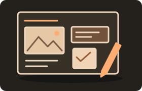
01기획
레퍼런스 조사
우리 영상의 방향 설정
영상 제작 경험 공유
실제 촬영본의 AI 리메이크
직접 제작한 원본 / 생성형 AI 재제작
01 / 제가 했던 일

01레퍼런스 조사
우리 영상의 방향 설정
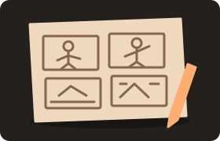
02장면과 타이밍 설계
출연자 동작 정리
출연할 임직원 섭외
스튜디오 섭외
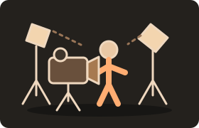
04현장 디렉팅
동작 설명과 반복 촬영
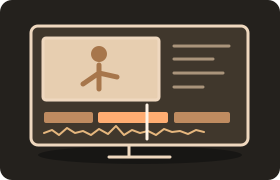
05장면 선택과 연결
음악에 맞춰 완성
02 / 직접 제작한 원본
이트너스 / 2024
Bright Us, Etners
03 / 촬영 전 준비
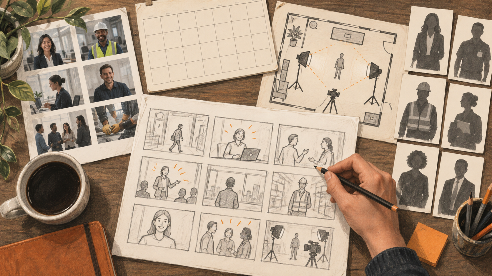
분위기와 구도 조사 → 장면별 콘티 작성
임직원 출연 섭외 → 스튜디오 섭외
촬영할 동작과 장면 정리 → 출연자에게 설명
실제로 찍기 전까지는, 나올 장면을 상상하며 준비
약 2주은 사전 준비 기간. 촬영과 편집에 쓴 시간은 별도.
04 / 장면을 설명하는 일
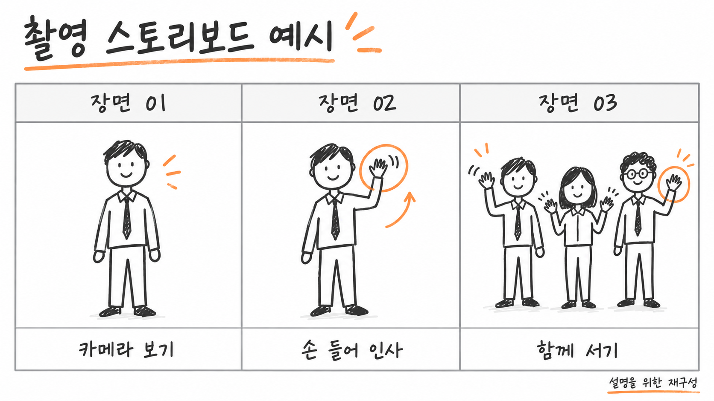
머릿속 장면을 출연자가 이해할 수 있게 설명
05 / 촬영 현장
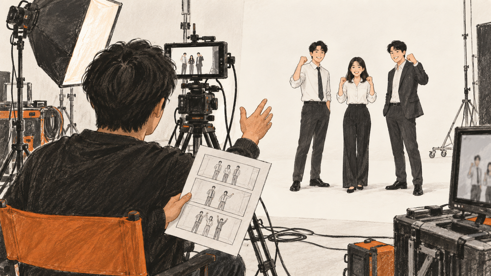
상상했던 장면과 실제 화면의 차이
임직원의 동작을 맞추는 현장 디렉팅
스튜디오에서 필요한 장면을 미리 확보
06 / 다시 만들어본 이유
직접 만들었던 영상을 기준으로
제작 과정을 다시 경험해보기
처음 시작해서 완성본까지 걸리는 시간
출연진, 스튜디오, 현장 연출의 변화
편집 중 필요한 장면을 추가할 수 있는지
이번 시도는 제작 과정과 속도 중심. 인물 일관성과 세부 품질 검수는 간략히 진행.
07 / 실제 작업 순서
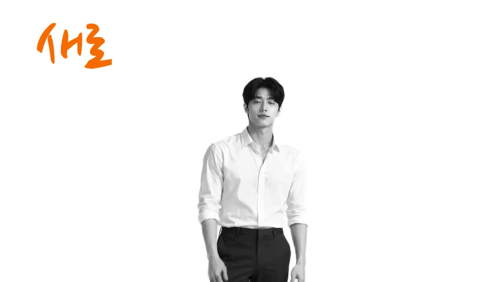
인물 생성
전신 이미지 확보
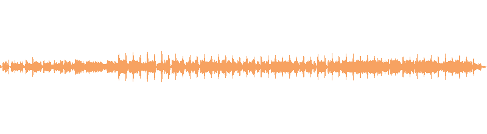
원본 노래 → 새 음원원본 노래를 전달
새 버전의 음원 제작
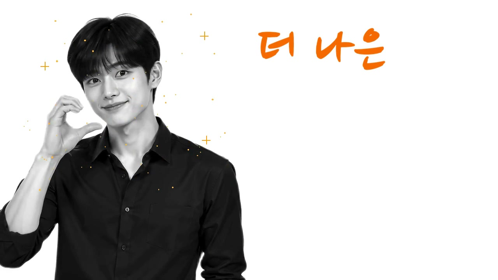
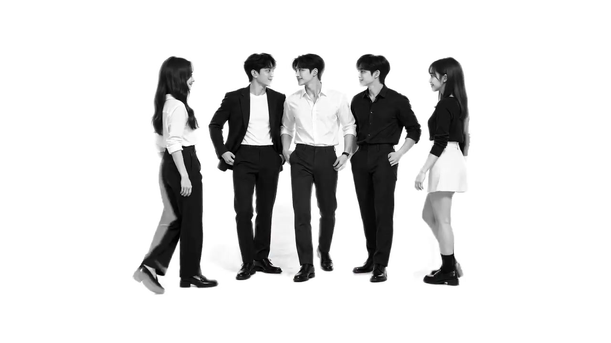
약 12개 생성 → 약 10개 사용
2개 영상 재생성 약 3회
영상·음원·가사 연결
재편집 요청 약 3회
08 / 결과
09 / 이번 작업의 시간 기록
기획·콘티·섭외 → 디렉팅·촬영 → 편집
생성 대기부터
최종 수정까지 포함
이미지·음원 → 영상 생성 → 편집·수정
준비한 아이디어를 짧은 시간 안에 결과로 확인.
발표자 회고 기준. 길이·제작 범위·품질 조건이 달라 속도 배수로 환산하지 않음. 품질을 높이면 AI 작업 시간도 늘어남.
10 / 비용과 준비 자원
외부 장비 대여비는 당시 지출에 포함하지 않음
사용한 AI 서비스 구독료 기준
작품별 지출과 월 구독료는 별개의 비용.
발표자 기억에 따른 대략적인 금액. 동일 길이·품질·조건의 제작비 견적이나 절감률 비교가 아님.
11 / 직접 느낀 변화
부족한 컷은 좌우 반전·재구성으로 활용
같은 소스를 다른 컷처럼 보이게 편집
카메라 무빙 등 시도할 장면의 폭 확대
결과를 보며 다시 편집 요청
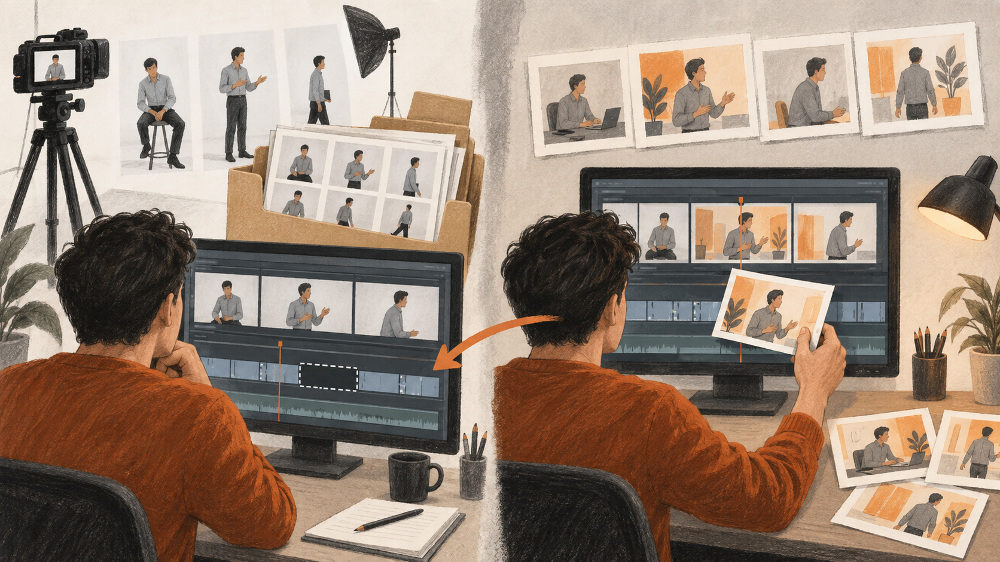
부족한 컷을 감추던 편집에서, 필요한 컷을 더하는 편집으로.
12 / 실사 촬영의 강점
실제 인물·제품·공간의
모습과 디테일을 기록
시선·표정·손동작을
현장에서 확인하며 조절
같은 인물·의상·소품으로
여러 구도와 동작을 촬영
실제 모습과 정교한 연출이 중요한 컷은 실사로 확보.
13 / 다음 제작에 적용할 방식
머릿속 장면을
설명하고 준비하는 시간
구도와 동작을 함께 보고, 필요한 촬영에 집중
현장에서 구도·동작을
반복해서 맞추는 과정
실제 인물·제품의 모습과 정교한 동작 확보
편집 중 부족한 컷과
추가 촬영의 부담
생성에 적합한 컷을 보완하고 연결·일관성 검수
준비와 반복에 쓰던 시간을 줄여,
연출과 완성도에 더 쓰는 제작.